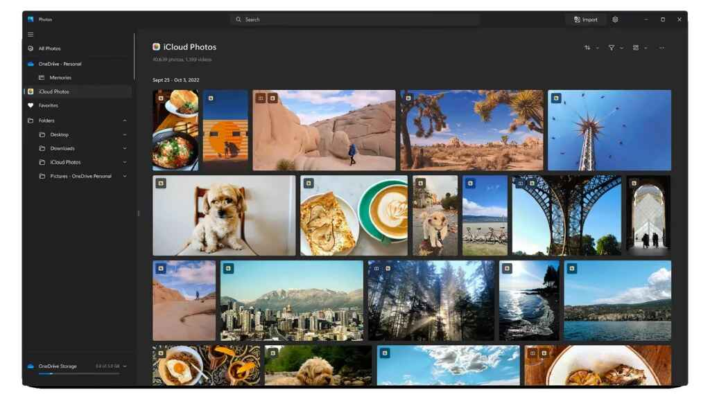

Microsoft සමාගම, නව surface devices හඳුන්වාදීමට අමතරව, Windows 11 හි Photos app එක සඳහා update කිරීමක් නිවේදනය කර ඇත. ඒ iCloud Photos integration සම්බන්ධවයි. මේ සමඟ, පරිශීලකයින්ට ඔවුන්ගේ iCloud Photos ඔවුන්ගේ Windows 11 උපාංග වෙත කෙලින්ම sync කිරීමට හැකි වේ.
iCloud Photos දැන් Windows 11 හි Photos app එකේ ඔබගේ PC සහ OneDrive වෙතින් වන photos සමඟ දිස් වනු ඇත. සියලුම මාධ්ය වෙත ප්රවේශය ලබා ගැනීම සඳහා නව “All Photos” gallery view ඇතුළත් කිරීමට Windows 11 හි Photos app එක redesign කර ඇත. මීට අමතරව side navigation pane එකෙහි විශේෂිත section එකක් ද අලුතින් ඇතුලත් කර ඇත.

Microsoft සමාගම විසින් නව Photos app එක (version 2022.31100.9001.0) සමඟින් නව update එක Dev Channel එකේ Windows Insiders වෙත නිකුත් කිරීමට පටන් ගෙන ඇත. ඔබ insider කෙනෙකු නම්, ඔබට පහසුවෙන් ඔබගේ iCloud Photos Windows 11 වෙත sync කළ හැකි මේ අලුත් update එක ලැබෙනු ඇත. මෙය සිදුකිරීමට පලමුවෙන් Windows 11 සඳහා iCloud app එකට sign in වියයුතුයි. මෙම update එක ඉදිරි මාසවලදී සාමාන්ය පරිශීලකයින් වෙත ලබාදීමට Microsoft සමාගම අපේක්ෂා කරයි.
මීට අමතරව, Apple සමාගම විසින් Microsoft සමාගම සමඟ තවත් ඒකාබද්ධ කිරීම් සඳහා සහයෝගීව කටයුතු කර ඇත. Apple Music සහ Apple TV apps ලබන වසරේ Microsoft Store වෙතින් ලබා ගත හැකි බව අනාවරණය වේ.
Apple සමාගම සමඟ මේ ඇති නව partnership එක Windows devices භාවිතා කරන අතරතුර පරිශීලකයින්ට ඔවුන්ගේ Apple ecosystem එකේ කොටස් වෙත ප්රවේශය ලබා ගැනීමට උපකාර කළ හැක. මෙය Microsoft සමාගම විසින් Phone Link app හරහා Windows මත Android phones හරහා messages, calls සහ තවත් දේ සක්රීය කර ඇති ආකාරයට සමාන වේ. ඉතින්, Windows 11 සමඟ මෙම නව iCloud Photos ඒකාබද්ධ කිරීම ගැන ඔබේ අදහස් මොනවාද? පහතින් comment කරන්න.
Source:
Beebom,
TechCrunch,
Website